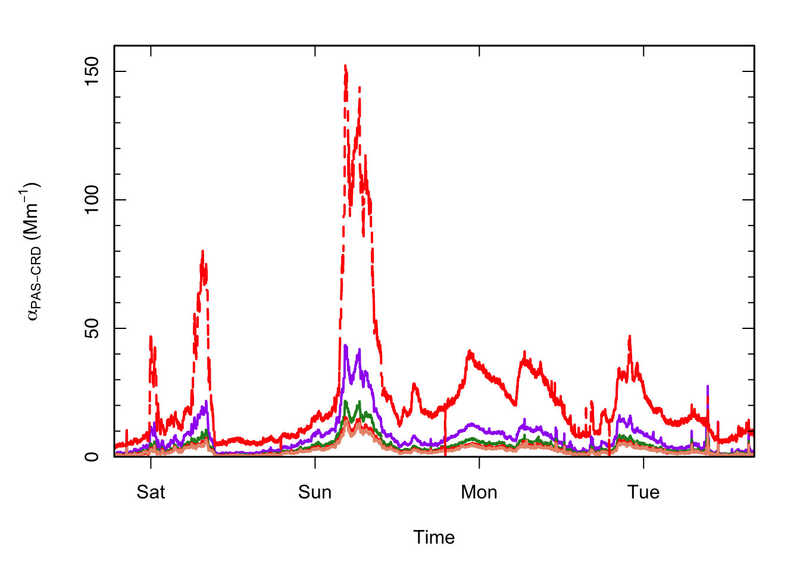

5 Data Processing
The MultiPAS system outputs two types of files during autonomous running: (1) the pas.txt tab-separated document containing both the raw and processed data for the PAS and (2) text files in the sweeps folder containing a record of each frequency sweep conducted. Although the main data file contains data that has been processed in real time, it is recommeneded that data is post-processed from the raw data prior to publication. Although data can be processed in any scientific computing or spreadhseet software, an R package, aeRo, has been developed to aid in data processing and is available via GitHub.
5.1 Processing Data with R
The R package aeRo has been developed (or rather, is currently under development) to aid in processing MultiPAS data with R.
R is open-source and freely available from the R Project for Statistical Computing. If using R, RStudio, an open-source and freely available IDE for R, is highly recommened for ease of using R.
5.1.1 The aeRo Package
The first step to processing data in R is to install aeRo. The package devtools will be needed to install aeRo from the command line.
# Install the devtools package and then load it
options(repos="http://archive.linux.duke.edu/cran/") # not necessary if installing from
# RStudio's package manager
install.packages('devtools')## Error in install.packages : error reading from connectionlibrary(devtools)
# Now, use it to install aeRo and then load aeRo
install_github('alphonse/aeRo')
library(aeRo)You can see the functions available in aeRo by clicking on its name in the “Pacakges” tab within RStudio, executing help(package = aeRo), or with the ls() command.
ls('package:aeRo')## [1] "averagePower" "averagePower.waves" "blockMeans"
## [4] "blockMeans.single" "chooseFilterStart" "compileAeth"
## [7] "convertToAbs" "convertToExt" "fillToLength"
## [10] "fitAAE" "getBg" "getBg.waves"
## [13] "getTau0" "importAeth" "importPAS"
## [16] "plot.abs" "plot.ssa"More information on any command can be obtained by typing a question mark followed by the command. For example, the help file for importPAS is found with ?importPAS.
5.1.2 Loading data into R
To load data into R, first call importPAS() and then subset and align the data via the graphical display to the start index of the first filter period using chooseFilterStart. chooseFilterStart requires user input to the console based on the values selected on the plot. Alternatively, if the start index is already known, you may use the argument graph = FALSE and start = index to bypass the graphical selector. The function will also make the data length a multiple of period.
library(dplyr)
setwd("/Volumes/CHEM/Groups/Smith_G/MultiPAS-IV/ambient/20170303")
pas <- importPAS('pas.txt', no.cols = 18) %>%
# chooseFilterStart() ## typically uncommented, for graphical interface
chooseFilterStart(graph = FALSE, start = 1430) # only used when start point
# is already known, comment otherwise.5.1.3 Exploring MultiPAS Data
The PAS outputs a tab-separated text file of the raw and processed MultiPAS data. Columns are named according to the content, with the convention Ch1 = shortest laser wavelength.
# Display a few rows as an example
head(pas)## Time micCh1_mV micCh2_mV micCh3_mV micCh4_mV pdCh1_mV
## 1430 2017-03-03 18:39:32 22.743 11.938 7.2965 6.9984 593.96
## 1431 2017-03-03 18:39:33 22.798 11.813 7.2420 6.9810 594.03
## 1432 2017-03-03 18:39:34 22.694 11.159 6.8411 6.5995 594.05
## 1433 2017-03-03 18:39:35 22.688 10.988 6.7961 6.5283 594.12
## 1434 2017-03-03 18:39:36 21.352 10.392 6.4951 6.1681 584.84
## 1435 2017-03-03 18:39:37 21.181 10.229 6.3737 6.0705 584.75
## pdCh2_mV pdCh3_mV pdCh4_mV tau_sec babsCh1_Mm babsCh2_Mm
## 1430 1073.4 864.07 806.18 3.6586e-05 0.35654 -0.29381
## 1431 1072.9 863.74 806.00 3.3154e-05 0.31628 -0.99175
## 1432 1056.2 850.29 793.51 2.9407e-05 0.40930 -1.10790
## 1433 1055.5 849.70 793.08 1.7895e-05 0.23405 -1.74540
## 1434 1039.0 836.43 780.69 1.2059e-05 0.22452 -1.90810
## 1435 1038.1 835.57 780.02 2.1839e-05 -2.05710 -2.51240
## babsCh3_Mm babsCh4_Mm bext_Mm fres_Hz filter_state elapsedTime_min
## 1430 -0.21158 -0.012408 36.964 1392 0 24
## 1431 -0.70289 -0.472130 44.498 1392 0 24
## 1432 -0.76618 -0.493860 55.666 1392 0 24
## 1433 -1.24990 -0.982410 70.830 1392 0 24
## 1434 -1.30360 -1.072700 157.160 1392 0 24
## 1435 -1.68420 -1.551100 263.900 1392 0 24As seen in the above snippet, the data file contains the following columns (18 total):
- Time: Sample time in the non-ambiguous UNIX/POSIX time standard, ‘YYYY-MM-DD HH:MM:SS’.
- micCh1_mV – micCh4_mV: The raw microphone signal in mV for each channel; if only 3 channels are present Ch4 will be filled with ‘0’.
- pdCh1_mV – pdCh4_mV: The raw photodiode signal in mV for each channel; if only 3 channels are present Ch4 will be filled with ‘0’.
- tau_sec: The ringdown time in seconds; for systems without a CRD, will be filled with ‘0’.
- babsCh1_Mm – babsCh4_Mm: The real-time absorption in 1/Mm for each channel; if only 3 channels are present Ch4 will be filled with ‘0’.
- bextCh1_Mm: The real-time exticntion in 1/Mm for each channel; if no CRD is present no extinction is measured and column will be filled with ‘0’.
- fres_Hz: The resonant frequency in Hz used during each sampling period.
- filter_state: A boolean indicating whether the filter is out (
0) or inline (1). - elapsedTime_min: The elapsed time in minutes since the start of the last filter; displays the maximum value during the frequency sweep.
5.1.4 Processing The Data
With aeRo, data can be processed by stringing together a few functions.
# Calculate powers, backgrounds, and tau_0, and add to main data.frame
pas <- cbind(pas, getBg(pas)) %>%
cbind(averagePower(pas)) %>%
cbind(tau0_s = getTau0(pas$tau_sec))
# Convert data to absorption & extinction
pas <- cbind(pas, convertToAbs(x=pas[, 2:5], bg=pas[, 19:22], p=pas[, 23:26], m=114000)) %>%
cbind(ext662_Mm = convertToExt(pas$tau_sec, pas$tau0_s))
# Set background periods to NA for cleanliness in plotting
pas[which(pas$filter_state == 1 | pas$elapsedTime_min > 23.5 | pas$elapsedTime_min < 2.0), 28:32] <- NA
# Add rolling average via "zoo" pacakge, but exlude NAs
library(zoo)
pas[!is.na(pas$abs406_Mm), 28:32] <- rollmean(na.exclude(pas[, 28:32]), k = 120, fill = NA)5.1.5 Plot data
aeRo includes a plot class specifically for absorption data: plot.abs(). Argruments can be passed to plot() to change the look of the plot.
plot.abs(x = pas$Time, y = pas[, 28:32])
Further functions for calculating AAE, SSAs, etc., are forthcoming.